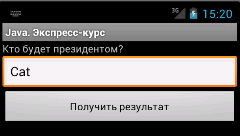

/* Моя кошка замечательно разбирается в программировании. Стоит мне объяснить проблему ей - и все становится ясно. */
John Robbins, Debugging Applications, Microsoft Press, 2000

/* Моя кошка замечательно разбирается в программировании. Стоит мне объяснить проблему ей - и все становится ясно. */
John Robbins, Debugging Applications, Microsoft Press, 2000
Условный оператор if часто применяется в программировании и имеется во всех языках программирования. Оператор if позволяет вашей программе в зависимости от условий выполнить оператор или группу операторов, основываясь на значении булевой переменной или выражения. Оператор if являетя основным оператором выбора в Java и позволяет выборочно изменять ход выполнения программы - и это одно из основных отличий между программированием и простым вычислением.
Оператор if начинается с ключевого слова if. Ключевое слово if должно сопровождаться булевым выражением, заключенным в скобки. Самая простая форма выглядит так:
if (условие) оператор; // если условие истинно, то выполняется оператор
Здесь условие - это булево выражение, имеющее значение true или false. Если условие истинно, то оператор или группа операторов выполняется, если ложно, то оператор не выполняется. Очень часто булево выражение в операторе if содержит какое-нибудь сравнение, но можно использовать булеву переменную или константу
if (isRaining)
Оператор if продолжается заключенным в фигурные скобки фрагментом, который называют блоком операторов. Если используется только один оператор, то фигурные скобки можно опустить. Но практика показывает, что лучше их всегда использовать, особенно в сложных проектах, когда постоянно приходится что-то переделывать.
Напишем следующий пример:
if (2 * 2 == 5)
{
editResult.setText("Дважды два равно пяти!);
}
Как вы думаете, что появится на экране? Правильно, ничего, так как оператор не будет выполняться, потому что условие 2 * 2 == 5 является ложным.
Обратите внимание, что оператор равенства состоит из двух символов знака равно. Об этом часто забывают начинающие программисты.
Вот список операторов, которые можно использовать в условных выражениях:
| Оператор | Описание |
|---|---|
| < | Меньше чем |
| <= | Меньше или равно |
| > | Больше чем |
| <= | Больше или равно |
| == | Равно |
| != | Не равно |
Существует еще и второй вариант оператора if с использованием ключевого слова else:
if (условие) оператор; // если условие истинно, то выполняется первый оператор else оператор; // если условие ложно, то выполняется оператор после else
В этом случае при выполнении условия оператора if инициируется только один оператор, если условие не выполняется, то также инициируется только один оператор, который относится к else. Также можно использовать блоки операторов, тогда синтаксис будет выглядеть так:
if (условие)
{
оператор1;
оператор2;
}
else
{
оператор1;
оператор2;
}
Обе части оператора if и else не могут выполняться одновременно. А условное выражение, управляющее оператором if должно возвращать булево значение.
Возьмём пример из жизни. Выйдем на Манежную площадь, где собрались люди, поддерживающие Путина. У митингующих можно встретить плакат:
Попробуем перевести его на язык Java:
String who = editResult.getText().toString();
if (!who.equals("Putin"))
who = "Cat";
else
who = "Putin";
editResult.setText(who);
Запустите программу и пробуйте завести любые фамилии политиков, а затем щелкайте на кнопке. Вы увидите, что при вводе любой фамилии кроме Putin, президентом будет кот.

Вложенный оператор if используется для дальнейшей проверки данных после того, как условие предыдущего оператора if принимает значение true. Иными словами, вложенный оператор применяется в тех случаях, когда для выполнения действия требуется соблюдение сразу нескольких условий, которые не могут быть указаны в одном условном выражении. Необходимо помнить, что во вложенных операторах if-else вторая часть else всегда относится к ближайшему оператору if, за условным выражением которого следует оператор ; или блок операторов. Вот небольшой пример:
if(i == 10)
{
if(j < 20) a =b;
if(k > 100) c =d;
else a = c; // else относится к if(k > 100)
}
else a = d; // else относится к if(i == 10)
Часто используется цепочка операторов if-else-if - конструкция, состоящая из вложенных операторов if:
if (condition)
statement;
else if (condition)
statement;
else if (condition)
statement;
.
.
.
else
statement;
Условные выражения оцениваются сверху вниз. Как только найдено условие, принимающее значение true, выполняется ассоциированный с этим условием оператор, а остальная часть цепочки пропускается. Если ни одно из условий не принимает значение true, то выполняется последний оператор else, который можно рассматривать как оператор по умолчанию. Если же последний оператор else отсутствует, а все условные выражения принимают значение false, то программа не выполняет никаких действий.
Напишем пример, вычисляющий время года, когда коты поют свои мартовские песни.
int month = 3; // март
String season; // время года
if(month == 1 || month == 2 || month == 12)
season = "Зимушка-зима";
else if (month == 3 || month == 4 || month == 5)
season = "Весна";
else if (month == 6 || month == 7 || month == 8)
season = "Лето";
else if (month == 9 || month == 10 || month == 11)
season = "Осень";
else
season = "Вы с какой планеты?";
textViewInfo.setText("Мартовские песни коты поют, когда на дворе " + season);
Продвинутые программисты часто используют тернарный оператор ? : вместо if-else. Например, нужно вычислить, какое из двух чисел больше и занести результат в третью переменную:
int largerNum;
int lowNum = 9;
int highNum = 27;
if(lowNum < highNum) // если первое число меньше второго
{
largerNum = highNum;
} else { // иначе
largerNum = lowNum;
}
При тернарном варианте вычисляется выражение слева от знака вопроса. Если оно возвращает true, то берется выражение слева от двоеточния, если возвращается false, то берется выражение справа от двоеточия.
int lowNum = 9;
int highNum = 27;
int largerNum = lowNum < highNum ? highNum : lowNum;
Нельзя сказать, что такой код слишком читаем, поэтому можно не использовать в своей практике.
Решите задачи. Ответы доступны зарегистрированным пользователям.
Задача: Попросите кота загадать число от 0 до 100. У вас будет семь попыток на угадывание. При каждой попытке вам будет выводиться сообщение - Мало или Много. Если угадаете, уложившись в семь попыток, то выиграли. Если нет, то идёте кормить кота.
Для генерации секретного числа используетй код:
Random r = new Random();
int secret;
// Генерируем число от 0 до 100
secret = r.nextInt(100) + 1;
Учебный Центр Профессионал